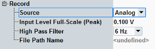
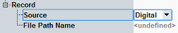
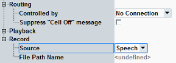

The displayed recording settings depend on the selected "Source".



All these settings are described in the following.
Selects a source for the audio signal to be recorded.
Both input channels are recorded. If only one channel is used by your signal, you nevertheless get a stereo signal, with one channel silent.
"Analog" | The signal from the two AF IN connectors is recorded. |
"Digital" | The signal from the SPDIF IN connector is recorded. |
"Speech" | The signal from the internal speech decoder is recorded. In a typical setup, the controlling application demodulates an RF signal and feeds the speech decoder. |
This setting configures the A/D conversion in the signal input path for the "Analog" source.
The value defines the peak voltage of the analog input signal that corresponds to the digital signal full-scale value.
Configure this setting according to the maximum voltage that you expect at the AF IN connector.
Remote command:Configures the cutoff frequency of a highpass filter in the input path.
Remote command:Displays the path and file name of the target file for recording.
Select the file from the main view, see "Save File hotkey".
Remote command:Selects the controlling master application for the "Speech" source.
Remote command:Only relevant for the "Speech" source.
If the "... Signaling" softkey is selected and the cell signal is on and you press [ON | OFF], a warning can be displayed, asking whether you really want to switch off the cell signal.
The checkbox suppresses the warning.
Remote command:Not applicable